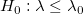
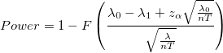
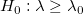
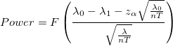
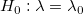
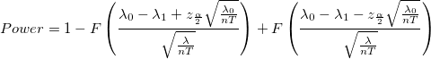
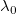
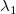
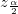

/math-7b8b965ad4bca0e41ab51de7b31363a1.png "n") : サンプルサイズ
: サンプルサイズ
片側検出力:


片側検出力:


両側検出力:


: サンプルサイズ
/math-c6a6eb61fd9c6c913da73b3642ca147d.png "\lambda") : 真の母集団率
: 真の母集団率

: 帰無率
: 対立率/math-3abc4a58be38c24030120ec6c3464783.png "z_{\alpha }") : 正規分布の
: 正規分布の/math-7b7f9dbfea05c83784f8b85149852f08.png "\alpha") 水準の上側臨界値
水準の上側臨界値

: 正規分布の 水準の両側臨界値/math-800618943025315f869e4e1f09471012.png "F") : 標準正規分布の累積分布関数
: 標準正規分布の累積分布関数
/math-b9ece18c950afbfa6b0fdbfa4ff731d3.png "T") : 曝露
: 曝露
Origin は、検出力の式を使用した反復アルゴリズムを使用します。各反復で、候補となるサンプルサイズに対して検出力が評価されます。計算された検出力が目標値に達すると、反復が停止します。報告されるサンプルサイズは、この値以上の最小の整数（つまり、最も近い大きい整数）になります。